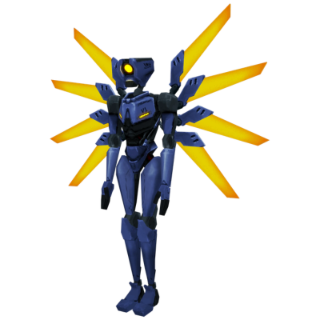
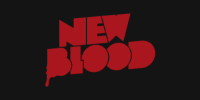
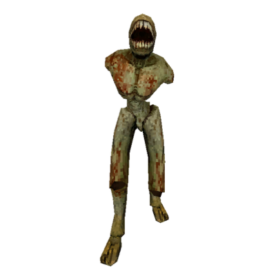
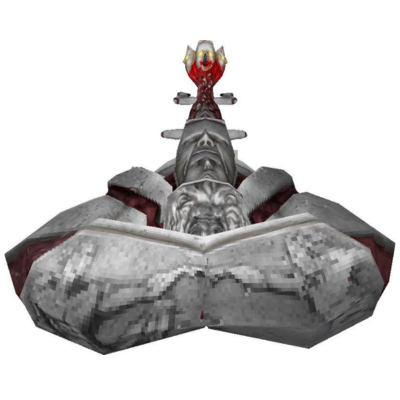

V1

V1 é a máquina assassina enviada ao Inferno para coletar almas e cumprir sua missão.

Criador: Hakita

V1 é a máquina assassina enviada ao Inferno para coletar almas e cumprir sua missão.

Restos torturados da humanidade em forma semelhante a zumbis. Geralmente servem de alimento para outros animais.

Demons são criaturas nativas do Inferno. Eles se formam a partir da massa infernal ou são criados a partir de pecadores ou seus restos mortais.
A missão do protagonista V1 é coletar almas no Inferno, motivado por uma programação para exterminar e conquistar.
Ele entra no Inferno como parte de uma guerra celestial, buscando dominar os reinos infernais.
Assista o vídeo da história de ULTRAKILL:
ULTRAKILL História